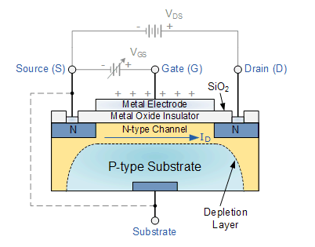
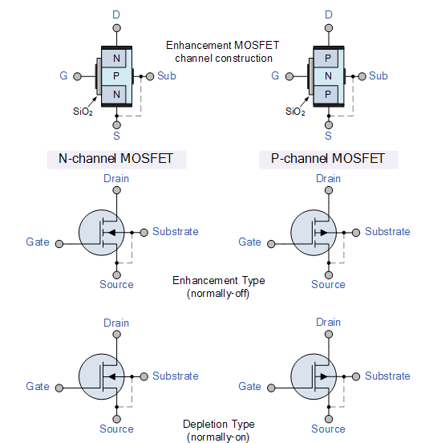

Up
Electronics
Also
Understanding the MOSFET requires understanding diodes and PN junctions .
Here is an Enhancement type MOSFET:

Overall Idea
The idea of a MOSFET is that applying a voltage to the gate changes the behavior between the source and drain. In an n-channel Enhancement mode MOSFET (shown above),
no current can flow without a gate voltage. This is the case because the positive terminal of the battery will reverse bias the PN junction, increasing the size of the depletion region.
The way around this issue is to apply a voltage to the gate. The substrate (in this example P-type) has both holes as majority charge carriers and holes as minority charge carriers.
When the positive terminal is connected to the gate, an electric field is formed due to the build up of charge on the metal electrode. The electric field attracts electrons, creating a channel of N-Type material near the insulator.
Another way to think of this process is that the electrode and insulator act like the top plate and dialectric in a capacitor, and the n-type channel forms as a charge must build up on the capacitor's "bottom plate". Now that there is a pure n-type channel,
there is no depletion region and the large current Ids can flow.
The other variations of MOSFET are P-Channel and Depletion type. P-Channel flips the
